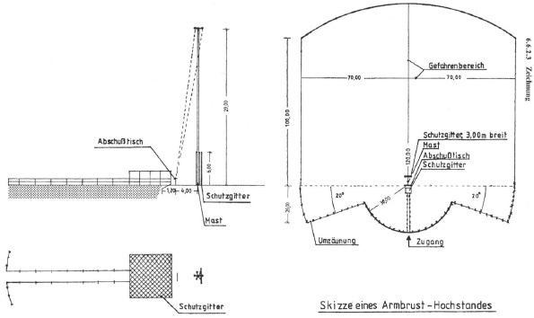
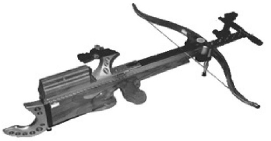
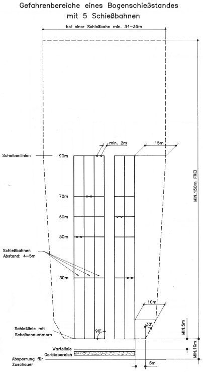

8.1 Armbrüste für 10-m und 30-m
8.1.1 Offene Schießstände
Offene Schießstände zum Schießen (s. Glossar zu Armbrust) mit Armbrüsten müssen entsprechende Sicherheitsbauten wie bei Schusswaffen aufweisen. Bei Schießständen für Armbrüste-10-m sind die Anforderungen nach Nummer 3 für Schießstände mit DL-Waffen anzuwenden. Bei Schießständen für Armbrüste-30-m sind die Anforderungen an Schusswaffen mit einer E0 bis 200 J einzuhalten. Diese Anforderungen werden oft dadurch gewährleistet, dass mit Armbrüsten auf Schießständen mit entsprechender Nutzung geschossen wird.
Beim Schießen mit Armbrüsten sind geeignete Zuganlagen zu verwenden. Zur Aufnahme von Scheiben sind diese Zuganlagen mit einer Scheibenunterlage aus Holz und mit Zentrum aus Blei der Dicke 2 cm ausgestattet. Die Bleiplatten sind entweder quadratisch mit einer Kantenlänge von 5 cm oder rund mit einem Durchmesser von 5 cm für die 10-m-Disziplin. Für die 30-m-Disziplin haben die Platten entsprechend eine Kantenlänge oder einen Durchmesser von 9 cm.
Die schießsportlich vorgegebenen Scheibenhöhen betragen:
Armbrust-10-m: 1,40 m ± 0,05 m
Armbrust-30-m: 1,40 m ± 0,20 m
8.1.2 Geschlossene Schießstände
Beim Schießen in geschlossenen Schießständen ist die äußere Sicherheit gewährleistet. Es ist darauf hinzuweisen, dass in Schussrichtung senkrecht liegende harte Baustoffe zu einer Beschädigung der Bolzen führen können. Aus diesem Grund wird eine Abdeckung mit weichen Materialien empfohlen, in denen die Bolzen unbeschädigt aufgenommen werden.
Hinsichtlich der Scheibenunterlage wird auf Nummer 8.1.1 verwiesen.
8.2 Schießstände für Hocharmbrüste
8.2.1 Allgemeine Bestimmungen
Mit Vogel- oder Hocharmbrüsten wird in einem Winkel von ca. 70° bis 80° aufwärts auf Ziele geschossen, die an einem 27 m bis 32 m hohen Mast angebracht sind (Abbildung 8.2.3). Der Abstand zwischen dem Schützenstand und dem Mast beträgt 4,00 m (bzw. zwischen 7,00 m und 10,50 m gemäß den Richtlinien des Landesverbandes der Armbrustschützen im Bund der historischen Deutschen Schützenbruderschaft).
Unmittelbar hinter dem Mast ist grundsätzlich ein senkrecht stehendes, aus Maschendraht gefertigtes Schutzgitter der Breite ≥ 3 m und der Höhe ≥ 6 m anzubringen. Hierdurch sind Bolzen, die unter einem Winkel von weniger als 45° aufwärts abgegeben werden und die Umgebung über eine Absperrung des Geländes hinaus gefährden würden, aufzufangen. Die Maschenweite und Drahtdicke des Gitters sind so zu bemessen, dass alle flacher 45° verschossenen Bolzen sicher aufgefangen werden. Die Maschenweite muss ≤ 20 mm (bzw. von geringerem Durchmesser als die verwendeten Bolzen) sein und die Drahtdicke (ohne eine vorhandene Kunststoffummantelung) ≥ 1,5 mm betragen.
Auf das Gitter darf verzichtet werden, wenn bis zur Höchstschussweite im jeweils möglichen Abgangswinkel Gefahren auszuschließen sind. Im Einzelfall sind die Höchstschussweiten zu ermitteln.
Der Gefahrenbereich des Schießstandes erstreckt sich in der Fortsetzung der Linie Schützenstand (Schusstisch)-Mast (Schießstange) im beiderseitigen Abstand hiervon und rückwärts dieses Bereiches (Abbildung 8.2.3).
Zur Abschirmung des Gefahrenbereiches ist in Verlängerung der Linie Schützenstand-Mast bis zu einer Entfernung von 100 m zu beiden Seiten ein Bereich von 70 m und bis 120 m eine durch einen Kreisbogen bestimmte Entfernung abzusperren. Der übrige, im Halbkreis um den Mast sich erstreckende Gefahrenbereich ist, mit Ausnahme des Zugangs zu dem Schützenstand bzw. Zuschauerplatz, bis zu einem Abstand von mindestens 30 m vor dem Mast zu sperren.
Beim Sternschießen und bei Verwendung von Masten mit Fangkorb kann im Einvernehmen mit einem Schießstandsachverständigen der Gefahrenbereich im Einzelfall reduziert werden. Eine Verringerung der Sicherheitsabstände in Schussrichtung ist dann möglich, wenn nachvollziehbar der Nachweis für die Gewährleistung der Sicherheit auf andere Weise erbracht wird.
Die technischen Betriebsmittel (Mast, Schutzgitter usw.) sind regelmäßig auf ihre Betriebssicherheit zu prüfen. Das Aufstellen und Umlegen des Mastes darf nur von oder unter Aufsicht einer befähigten Person durchgeführt werden.
8.2.2 Sicherung gegen herabfallende Bolzen
Der Zugang zu dem Schützenstand bzw. Zuschauerplatz soll von hinten auf der Linie Schützenstand-Mast erfolgen und derart abgesperrt sein, dass dadurch einem unbefugten Betreten des anliegenden Gefahrenbereiches begegnet wird.
Der unmittelbar hinter dem Schützenstand gelegene Aufenthaltsort für nicht schießende Schützen und Zuschauer ist gegen herabfallende Bolzen und Materialteile getroffener Ziele zu sichern. Hierzu ist dieser Platz hinter dem Schützenstand im Abstand von höchstens 1,20 m und einer Höhe von ca. 2,20 m bis 2,50 m mit einem Schutzgitter aus Maschendraht oder einem gleichwertigen Baustoff zu überdachen. Die Maschenweite und die Drahtdicke sind ebenso zu bemessen wie bei dem Schutzgitter, das grundsätzlich hinter dem Mast senkrecht aufzustellen ist.
Nichtschießende Schützen und Zuschauer dürfen sich nur unter der Überdachung aufhalten. Hierauf ist durch besondere Warntafeln hinzuweisen.
Bolzen dürfen nur dann aufgesammelt werden, wenn nicht geschossen wird.
8.2.3 Zeichnung

Abbildung 8.2.3 Abmessungen eines Armbrust-Schießstandes
8.3 Schießstände für Feldarmbrüste
8.3.1 Allgemeines
Mit Feldarmbrüsten wird u. a. nach den Regeln des Deutschen Feldbogensportverbandes e.V. (DFBV), der Internationalen Armbrustunion e.V. (IAU) und des Deutschen Schützenbundes e.V. (DSB) auf Scheibenentfernungen von 35 m, 50 m und 65 m geschossen.
Grundsätzlich wird mit Feldarmbrüsten in Bogen-Schießanlagen auf farbige Ringscheiben mit einem Durchmesser von 60 cm geschossen.
Die sicherheitstechnischen Bedingungen von Schießständen für Feldarmbrüste und Bogen-Schießanlagen sind im Wesentlichen gleich.
8.3.2 Schießbahn
Eine Schießbahn muss mindestens 4 m (bis 5 m) breit sein.
Liegen mehrere Schießbahnen nebeneinander, müssen die seitlichen Abstände und die der Scheiben voneinander mindestens 2 m betragen.
8.3.3 Freies Gelände ≥ 150 m
Bei einem in freiem Gelände gelegenen Schießstand ist ein Bereich gefährdet, der sich vom Schützenstand in der Schussrichtung in einer Länge von mindestens 150 m und an dem Schützenstand (Schießlinie) beiderseits der äußeren Schießbahnen nach außen in einer Breite von 5 m erstreckt. Bis zu dem Ende der Schießbahn erweitert sich die Breite des Gefahrenbereiches beiderseits der Schießbahn von 10 m auf 15 m.
Liegen mehrere Schützenstände mit den dazugehörenden Scheiben nebeneinander und ergeben sich somit mehrere Schießbahnen, erstrecken sich die seitlichen Gefahrenbereiche der äußeren Schießbahn abseits deren Mittellinien in den gleichen Breiten, die für die einzelne Schießart angegeben sind.
Wird auf Schießbahnen auf verschiedene Entfernungen geschossen, gilt für die Festlegung der Breite des Gefahrenbereiches in Höhe der Scheiben die kürzeste Scheibenentfernung. Die angeführten Gefahrenbereiche sind gegen ein Betreten zu sichern (siehe Zeichnung 8.3.2).
8.3.4 Freies Gelände < 150 m
In Schießbahnen, bei denen der erforderliche freie Gefahrenbereich von mindestens 150 m vom Schützenstand in Schussrichtung nicht vorhanden ist, müssen Fanganlagen angelegt werden.
Bei einer Entfernung von 120 m vom Schützenstand in Schussrichtung einer Fanganlage (Erdwall, Fangnetz, Mauer) beträgt die Mindesthöhe 3 m.
Der natürliche Hang eines Geländes sowie dichter Waldbestand mit Unterholz von mindestens 20 m Tiefe, die nach außen hin gegen ein Betreten gesichert sind, und vorhandene Bauwerke mit geschlossenen Wandflächen sowie der erforderlichen Mindesthöhe gelten ebenso als Fanganlagen. Die genannten Fanganlagen müssen den gesamten Gefahrenbereich in Schussrichtung abdecken und sind gegen ein Betreten zu sichern.

Abbildung 8.3.1 Feldarmbrust

Abbildung 8.3.2 Abmessungen eines Bogenschießstandes